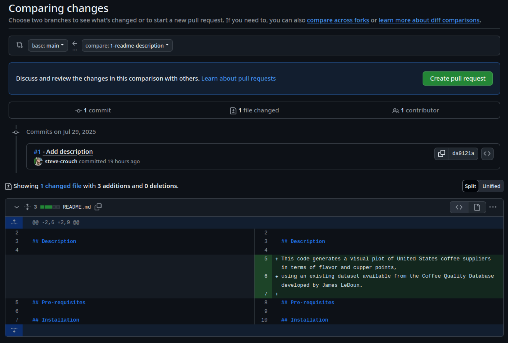
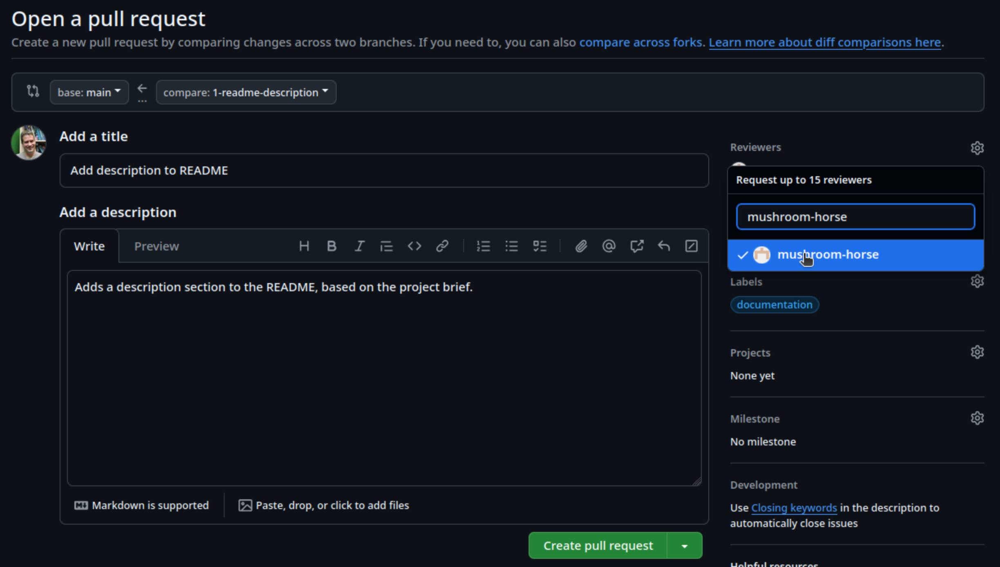

2.2 Collaborative Workflow: Pull Requests and Code Reviews
Last updated on 2025-08-07 | Edit this page
Estimated time: 15 minutes
Overview
Questions
- How can infrastructure support collaborative development of code across a team?
- What is a pull request and why are they useful?
- How do I submit a pull request on GitHub?
- How are code reviews useful?
- What are the different types of code review?
- How do I review a pull request on GitHub?
- What’s the process for merging a pull request?
Objectives
- Define a pull request and identify some reasons for using pull requests
- Bullet-point some advantages and limitations of working in a feature-branch workflow
- Submit a pull request in GitHub
- Review a pull request
- Merge a pull request into its base branch
So far we’ve looked at different ways we can work on separate strands of development in branches and then merge them. Since they are independent, it’s sometimes difficult to know what the overall effect will be when they are finally merged.
Software development thrives on collaboration, even when much of the coding is done individually. Getting input from others can have a big impact on the quality, maintainability, and effectiveness of your work, often requiring only a small investment of time. Since there is rarely a single “perfect” way to solve a problem, working with others allows you to share knowledge, skills, and perspectives, leading to better solutions and new insights. Through collaboration, you can learn new techniques, discover tools and infrastructure that streamline development, and help build a shared understanding that benefits the wider team or community.
In this episode we’ll look at bringing together the use of feature branches and code review into a well-established collaborative development approach called feature branch workflow that aims to realise these benefits.
Introduction to Code Review
Types of Code Review
There are several types of code review, each suited to different contexts and goals.
An informal review involves casually asking a colleague for input or advice. This type of review is often used to improve understanding, share skills, or get help with problem-solving, rather than enforce specific standards. Some examples include over-the-shoulder code review (when one developer talks the other developer through the code changes while sitting at the same machine), and pair programming (when two developers work on the code at the same time with one of them actively coding and the other providing real-time feedback).
A contribution-oriented review occurs when changes or additions to a codebase are reviewed as they happen - commonly used in version-controlled software development workflows like GitHub’s pull requests which we’ll look at in this episode. This approach is a bit more formal (e.g. structured pull requests with approval workflows) and tool-assisted, and focuses on ensuring understanding, clarity, maintainability, and code quality.
Taken to the extreme, a more rigorous method is a formal code review, such as a Fagan inspection, where a team examines a codebase, or parts of it, systematically, following strict criteria to identify defects or ensure conformance to standards. While this method can be highly effective, it is resource-intensive and a less common practice.
Code Review Practices & Processes
In this episode, we will focus on code review practices centered around code modifications and contributions. The aim is to integrate code review into the research software development process in a way that is lightweight, low-stakes, and easy to adopt. Even a short initial code review can have a significant impact. As highlighted in “Best Kept Secrets of Peer Code Review” by Jason Cohen, the first hour of review is the most critical and productive, with diminishing returns thereafter.
The goal is to strike a practical balance: invest enough time to offer useful, actionable feedback without turning reviews into a bottleneck. When reviewing code, focus on:
- Code quality - is the code clear and readable? Do functions serve a single purpose? Is it well-structured and consistent with the rest of the project?
- Best practices and conventions - is the project’s coding style followed? Are tests and documentation included and up to date?
- Efficiency and minimalism - does the change duplicate existing functionality (found elsewhere in the code or in a third-party library)? Is it limited to what’s required by the issue or ticket?
- Knowledge sharing: ask clarifying questions (do not assume you understand everything or know best) and offer respectful, specific feedback. This helps everyone learn and builds team trust.
Given the value of that first hour, keep your efforts targeted. Do not spend time on:
- Linting or style issues - automated tools or CI pipelines should catch these
- Hunting for bugs, unless something clearly looks wrong — instead, check that tests exist for various cases that should catch bugs
- Fixing unrelated legacy issues that pre-date the change — log those separately to avoid scope creep
- Architectural overhauls — save big-picture changes for design discussions or dedicated meetings to decide whether the code needs to be restructured
- Refactoring everything — provide only a few critical suggestions and aim for incremental improvement, not perfection.
The process is typically iterative, with reviewers and contributors engaging in a cycle of discussion, updates, and re-review to address questions and refine changes before integration. If a conversation is taking place in a code review that has not been resolved by one or two back-and-forth exchange, then consider scheduling a conversation, or a pair programming session to discuss things further (and record the outcome of the discussion - e.g. in the pull requests’s comments).
Pull Requests and Code Reviews
In our previous exercise we focused on writing code in an individual
setting on feature branches. However if we allowed everyone to develop
and merge code whenever, wherever, and however they wanted, without any
kind of coordination, the result would likely be a chaotic and
potentially non-functional mess. Using feature branches helps to some
extent, keeping strands of development separate but in many cases, when
it comes time to merge our branch into the main branch, it
would be really useful to have a way to review code before it’s
finally merged to verify that these changes are well considered and
implemented.
Fortunately version control hosting infrastructures like GitHub support an additional step in the use of feature branches, the pull request: the changes in a feature branch are proposed in a pull request, and then the pull request is reviewed by another team member (or maybe several). If the pull request is judged to be a suitable set of changes, the pull request is accepted and the changes are merged using a branch merging strategy as discussed.
However, if the review identifies issues that indicate that it is unsuitable to be merged, the pull request is rejected. This does not necessarily mean the pull request has to be closed. Development on the feature branch of that pull request may continue, with further commits to address the points brought up in the review, and then the pull request reviewed again at a later time and perhaps accepted and merged.
In a sense, a pull request is a verification check - or insurance
policy - against merging bad commits to the main
branch.
This approach is known as feature branch workflow.
Preparing Some Example Work
In order for us to try out feature branch workflow as a team, let’s first create some issues on our group repository to represent some small tasks we’ll do using that approach.
Group Exercise: Make Work for Yourselves!
5 mins.
The group repository contains a draft README with a typical set of section headings that should be added:
- Description - what are the motivations for the software, the problem it aims to solve, and its key functions?
- Pre-requisites - what software or other dependencies are required to use this software?
- Installation - how do you install or deploy the software so it can be used?
- Usage - what are a basic set of instructions for using the software for its intended purpose?
- Running Tests - how do you run the automated unit tests?
- Authors/Maintainers - who are the authors and maintainers of the software? e.g. including yourselves, and your contact information?
- Licence - what is the licence for the software?
- Acknowledgements - what other projects, software or people should be acknowledged as part of this work?
As a group:
- Select a number of sections equal to the number of members in your group, and divide them up so everyone gets a section to write
- For each member select someone else who will review their pull request - make a note of this for later!
- Each member then creates an issue on the group repository describing
the task of writing that section, ensuring the issue has a sufficient
description, has a
Documentationlabel set, and is assigned to that member.
For example:
Next, based on your assigned task, we’ll use feature branch workflow on our cloned group repository.
Ensure you have a terminal open, and you’re currently in the root directory of your group repository.
- First, create a new branch for that issue, referencing the issue
number in the branch name,
e.g.
git branch 123-readme-description - Switch to that branch,
e.g.
git switch 123-readme-description - Use a code editor to edit the
README.mdfile and very briefly write content for that section as per your assigned issue - Intentionally introduce a spelling mistake or other smaller issue into the text, and save the file
- Add the changes to the Git staging area,
e.g.
git add README.md - Commit the changes, referencing the issue number in the commit
message prefixed with a
#symbol, e.g.git commit -m "#123 - Add description" - Push the changes to the remote group repository,
e.g.
git push -u origin 123-readme-description
If you go to the repository’s main branches page (e.g. https://github.com/github-username/coffee-analysis/branches) you should see your new branch listed, and eventually those of your other team members.
Submitting a Pull Request
Let’s each create a pull request now, based on our changes.
- First, go the
Pull requeststab at the top of the group repository main page, and selectNew pull request - In the
Compare changespage that comes up: - Select
compare:and select your new branch, e.g.123-readme-descriptionYou should now see a summary of the changes between the new branch and themainbranch, i.e. a single commit and the new README content you pushed earlier - Select
Create pull request
- Select
- In the
Open a pull requestpage that appears: - Enter a fitting title, brief description, and label
- Select
Reviewersand add the GitHub account for the other group member who will review your pull request - Select
Create pull request
You’ll then see a summary of the pull request, including a summary of
any conflicts with the base (main) branch, of which there
should be none. There’s also an option to merge the pull request - but
don’t do this yet, since you’ll need to wait for your pull request to be
reviewed!
Interestingly, even though we have created this PR to do a merge, we could continue developing our code on this new branch indefinitely if we wanted. We could make and push new commits to this branch, which would show up here, and we then merge at a future date. This may be particularly useful if we need to have a longer discussion about the PR as it is developing. The discussion would be captured in the comments for the PR, and when ready, we then merge the PR.
How Long should PRs be Open?
Which raises the question, of how long should PRs be open, or
branches for that matter? To some degree, this depends on the nature of
the changes being made But branches in Git are designed, and should be
wherever possible, short-lived and deleted when no longer required. The
longer a branch is open, the more potential changes could be made to the
main branch. Then when it comes time to merge the branch, we may get a
lot of conflicts we need to manage. So generally, it’s a good idea to
keep your branches open for a day or two, a few days maximum, before
creating a PR and doing a merge if you can. Note that we can also see
this PR, as well as any others, by selecting the
Pull request tab.
Reviewing Code
Next, you’ll be reviewing someone else’s pull request from your group, so let’s look at that pull request:
- Go to the
Pull requestspage on the group repository - Select the pull request from the other member who you’ve been assigned to review
This will present an overview of the pull request (PR), including on separate tabs:
-
Conversation- an overview of the PR, including comments and other activities associated with the PR, as well as a summary at the end, indicating the overall status in terms of reviews requested, and whether there are any merge conflicts with the base branch (mainin this case) -
Commits- a list of all commits on the feature branch that have yet to be merged into the base branch -
Checks- whether there are any automated checks implemented in GitHub Actions and their status -
Files changed- the list of files and their line-by-line changes for this PR
If you select the Files changed tab, of if you select
Add your review from the Conversation page
which takes you to the same tab, you can then begin your review.
By default, the presented view indicates a “unified” view.
This shows deletions highlighted in red, and additions highlighted in green.
Another view is the “split” view of these changes, which is
selectable by clicking on the cog-like icon and selecting
Split:
This provides a side-by-side alternative, with the older version on the left, and the newer version on the right. In this case, you should see a number of green highlighted lines on the right side of this view, indicating the added lines.
When providing a review, we have the option of adding comments or suggestions inline to the proposed changes. By hovering over a line and selecting the ‘+’ symbol at the start of the line, we’re able to add a comment on that line, for example if we spotted a spelling or grammatical mistake, or in the case of code, a programmatic problem or other issue.
Solo Exercise: Conduct a Review of Your Assigned PR!
5 mins.
Briefly review the content added by your colleague for their assigned
section, and if you identify an issue, add comments for content on a
particular line using +, adding a comment, and selecting
Start a review. Feel free to add other comments as
necessary.
When you’ve completed your review, select
Finish your review, leave an overall comment on your
thoughts about the PR, and select one of:
-
Comment- where you’re just leaving a comment and aren’t requesting any changes -
Approve- no comments are changes are necessary -
Request changes- feedback must be addressed before it can be merged
Finally, select Submit review.
Addressing Feedback
As owner of your PR, the next step involves addressing any feedback
made by the reviewer. Return to the PR you created earlier, and take a
look at the comments that will appear in the Conversation
tab. You may need to scroll down to see them.
Solo Exercise: Address your Colleague’s Feedback
Merging the Pull Request
With the review feedback addressed, we are now ready to merge the
pull request to the main branch. The bottom of the
Conversation tab will show a
Merge pull request button, and a summary of whether there
is a conflict with the base branch:
Selecting the drop-down will present you with a number of options for
how to perform the merge, which includes the merge options discussed
previously - create a merge commit, squash and merge, and rebase and
merge. Ensure this Create a merge commit is selected for
now.
Finally, select Merge pull request, add a commit message
that describes it, and Confirm merge to complete the
merge.
- Working collaboratively is a cornerstone of successful software development
- Code reviews can be short and informal, contribution-oriented, or formal
- The first hour of code review matters most
- Code review helps to increase code quality, ensure practices and conventions are met consistently, and increase codebase knowledge across the team
- GitHub supports code review as part of pull requests
- Aim to close pull requests as soon as is convenient, to avoid increased divergence from the main codebase